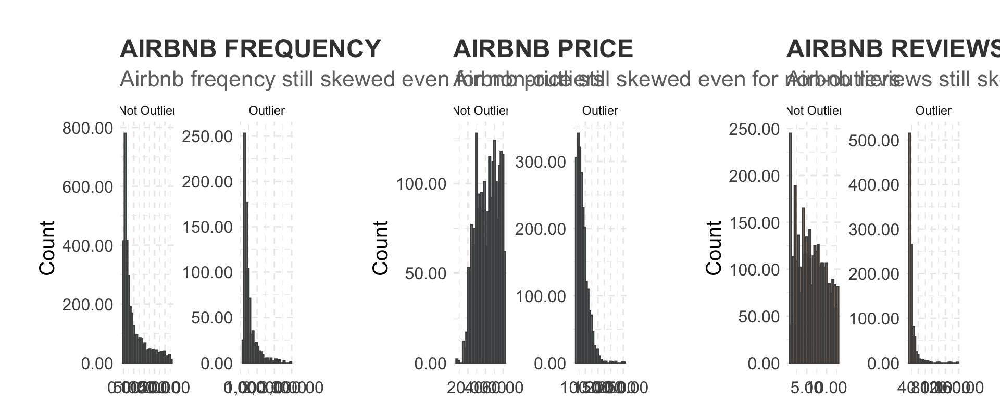
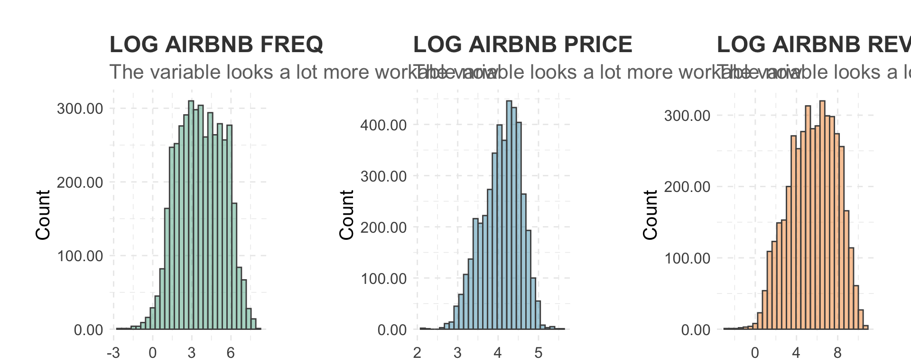
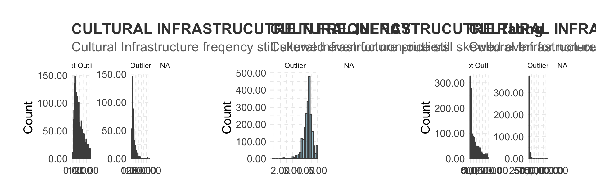
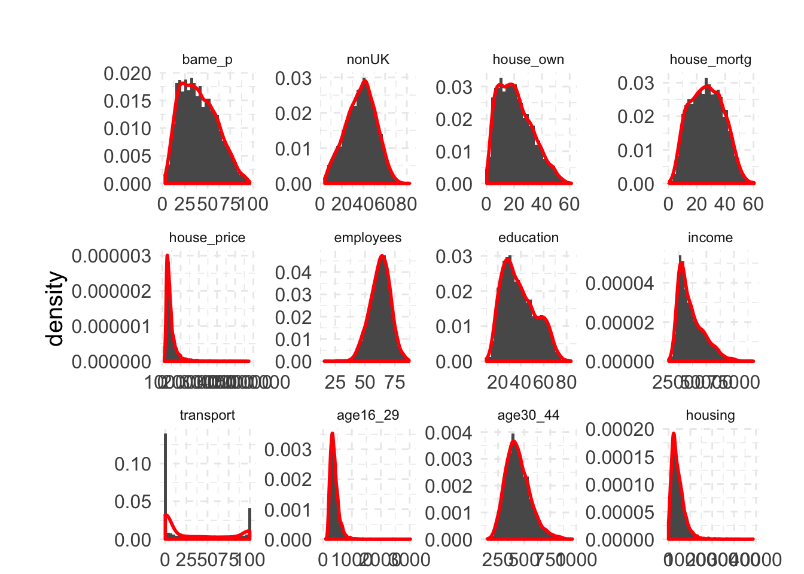
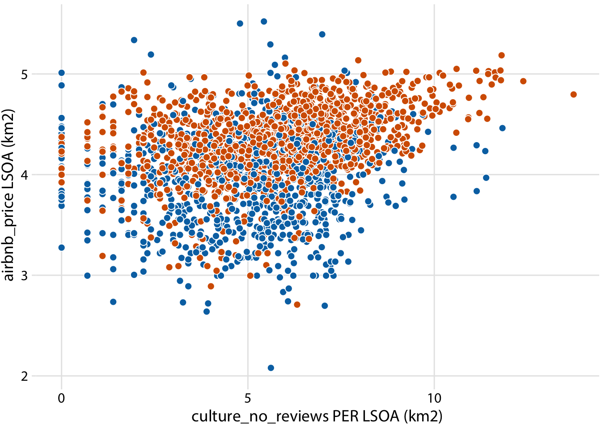

<!DOCTYPE html>
<html lang="" xml:lang="">
<head>

  <meta charset="utf-8" />
  <meta http-equiv="X-UA-Compatible" content="IE=edge" />
  <title>Chapter 4 Exploratory Data Analysis | Measuring the impact of cultural infrastructure on Airbnb listings in London</title>
  <meta name="description" content="This study uses cultural data science to measure the impact of cultural infrastructure on the supply and demand of Airbnb listings in London. The output format for this study is bookdown::gitbook." />
  <meta name="generator" content="bookdown 0.16.5 and GitBook 2.6.7" />

  <meta property="og:title" content="Chapter 4 Exploratory Data Analysis | Measuring the impact of cultural infrastructure on Airbnb listings in London" />
  <meta property="og:type" content="book" />
  
  
  <meta property="og:description" content="This study uses cultural data science to measure the impact of cultural infrastructure on the supply and demand of Airbnb listings in London. The output format for this study is bookdown::gitbook." />
  <meta name="github-repo" content="rstudio/bookdown-demo" />

  <meta name="twitter:card" content="summary" />
  <meta name="twitter:title" content="Chapter 4 Exploratory Data Analysis | Measuring the impact of cultural infrastructure on Airbnb listings in London" />
  
  <meta name="twitter:description" content="This study uses cultural data science to measure the impact of cultural infrastructure on the supply and demand of Airbnb listings in London. The output format for this study is bookdown::gitbook." />
  

<meta name="author" content="Vishal Kumar, Cultural Data Scientist" />


<meta name="date" content="2020-01-15" />

  <meta name="viewport" content="width=device-width, initial-scale=1" />
  <meta name="apple-mobile-web-app-capable" content="yes" />
  <meta name="apple-mobile-web-app-status-bar-style" content="black" />
  
  
<link rel="prev" href="load-data.html"/>
<link rel="next" href="maps.html"/>
<script src="libs/jquery-2.2.3/jquery.min.js"></script>
<link href="libs/gitbook-2.6.7/css/style.css" rel="stylesheet" />
<link href="libs/gitbook-2.6.7/css/plugin-table.css" rel="stylesheet" />
<link href="libs/gitbook-2.6.7/css/plugin-bookdown.css" rel="stylesheet" />
<link href="libs/gitbook-2.6.7/css/plugin-highlight.css" rel="stylesheet" />
<link href="libs/gitbook-2.6.7/css/plugin-search.css" rel="stylesheet" />
<link href="libs/gitbook-2.6.7/css/plugin-fontsettings.css" rel="stylesheet" />
<link href="libs/gitbook-2.6.7/css/plugin-clipboard.css" rel="stylesheet" />

<!-- Global site tag (gtag.js) - Google Analytics -->
<script async src="https://www.googletagmanager.com/gtag/js?id=UA-150184633-2"></script>
<script>
  window.dataLayer = window.dataLayer || [];
  function gtag(){dataLayer.push(arguments);}
  gtag('js', new Date());


<style type="text/css">
div.sourceCode { overflow-x: auto; }
table.sourceCode, tr.sourceCode, td.lineNumbers, td.sourceCode {
  margin: 0; padding: 0; vertical-align: baseline; border: none; }
table.sourceCode { width: 100%; line-height: 100%; }
td.lineNumbers { text-align: right; padding-right: 4px; padding-left: 4px; color: #aaaaaa; border-right: 1px solid #aaaaaa; }
td.sourceCode { padding-left: 5px; }
code > span.kw { color: #007020; font-weight: bold; } /* Keyword */
code > span.dt { color: #902000; } /* DataType */
code > span.dv { color: #40a070; } /* DecVal */
code > span.bn { color: #40a070; } /* BaseN */
code > span.fl { color: #40a070; } /* Float */
code > span.ch { color: #4070a0; } /* Char */
code > span.st { color: #4070a0; } /* String */
code > span.co { color: #60a0b0; font-style: italic; } /* Comment */
code > span.ot { color: #007020; } /* Other */
code > span.al { color: #ff0000; font-weight: bold; } /* Alert */
code > span.fu { color: #06287e; } /* Function */
code > span.er { color: #ff0000; font-weight: bold; } /* Error */
code > span.wa { color: #60a0b0; font-weight: bold; font-style: italic; } /* Warning */
code > span.cn { color: #880000; } /* Constant */
code > span.sc { color: #4070a0; } /* SpecialChar */
code > span.vs { color: #4070a0; } /* VerbatimString */
code > span.ss { color: #bb6688; } /* SpecialString */
code > span.im { } /* Import */
code > span.va { color: #19177c; } /* Variable */
code > span.cf { color: #007020; font-weight: bold; } /* ControlFlow */
code > span.op { color: #666666; } /* Operator */
code > span.bu { } /* BuiltIn */
code > span.ex { } /* Extension */
code > span.pp { color: #bc7a00; } /* Preprocessor */
code > span.at { color: #7d9029; } /* Attribute */
code > span.do { color: #ba2121; font-style: italic; } /* Documentation */
code > span.an { color: #60a0b0; font-weight: bold; font-style: italic; } /* Annotation */
code > span.cv { color: #60a0b0; font-weight: bold; font-style: italic; } /* CommentVar */
code > span.in { color: #60a0b0; font-weight: bold; font-style: italic; } /* Information */
</style>

<link rel="stylesheet" href="style.css" type="text/css" />
</head>

<body>


  <div class="book without-animation with-summary font-size-2 font-family-1" data-basepath=".">

    <div class="book-summary">
      <nav role="navigation">

<ul class="summary">
<li><a href="./">Measuring the impact of cultural infrastructure on Airbnb listings in London</a></li>

<li class="divider"></li>
<li class="chapter" data-level="1" data-path="index.html"><a href="index.html"><i class="fa fa-check"></i><b>1</b> Abstract</a></li>
<li class="chapter" data-level="2" data-path="intro.html"><a href="intro.html"><i class="fa fa-check"></i><b>2</b> Introduction</a></li>
<li class="chapter" data-level="3" data-path="load-data.html"><a href="load-data.html"><i class="fa fa-check"></i><b>3</b> Load Data</a><ul>
<li class="chapter" data-level="3.1" data-path="load-data.html"><a href="load-data.html#load-packages"><i class="fa fa-check"></i><b>3.1</b> Load packages</a></li>
<li class="chapter" data-level="3.2" data-path="load-data.html"><a href="load-data.html#download-data"><i class="fa fa-check"></i><b>3.2</b> Download data</a></li>
<li class="chapter" data-level="3.3" data-path="load-data.html"><a href="load-data.html#join-the-data"><i class="fa fa-check"></i><b>3.3</b> Join the data</a></li>
<li class="chapter" data-level="3.4" data-path="load-data.html"><a href="load-data.html#clean-variables-before-analysis"><i class="fa fa-check"></i><b>3.4</b> Clean variables before analysis</a></li>
</ul></li>
<li class="chapter" data-level="4" data-path="exploratory-data-analysis.html"><a href="exploratory-data-analysis.html"><i class="fa fa-check"></i><b>4</b> Exploratory Data Analysis</a><ul>
<li class="chapter" data-level="4.1" data-path="exploratory-data-analysis.html"><a href="exploratory-data-analysis.html#airbnb-eda"><i class="fa fa-check"></i><b>4.1</b> Airbnb EDA</a><ul>
<li class="chapter" data-level="4.1.1" data-path="exploratory-data-analysis.html"><a href="exploratory-data-analysis.html#airbnb-freqency-distributions"><i class="fa fa-check"></i><b>4.1.1</b> Airbnb freqency distributions</a></li>
<li class="chapter" data-level="4.1.2" data-path="exploratory-data-analysis.html"><a href="exploratory-data-analysis.html#airbnb-log-freqency-distributions"><i class="fa fa-check"></i><b>4.1.2</b> Airbnb log freqency distributions</a></li>
<li class="chapter" data-level="4.1.3" data-path="exploratory-data-analysis.html"><a href="exploratory-data-analysis.html#airbnb-inner-vs-outer-london"><i class="fa fa-check"></i><b>4.1.3</b> Airbnb Inner vs Outer London</a></li>
</ul></li>
<li class="chapter" data-level="4.2" data-path="exploratory-data-analysis.html"><a href="exploratory-data-analysis.html#cultural-infrastructure-eda"><i class="fa fa-check"></i><b>4.2</b> Cultural infrastructure EDA</a><ul>
<li class="chapter" data-level="4.2.1" data-path="exploratory-data-analysis.html"><a href="exploratory-data-analysis.html#cultural-infrastructure-frequency-distributions"><i class="fa fa-check"></i><b>4.2.1</b> Cultural infrastructure frequency distributions</a></li>
<li class="chapter" data-level="4.2.2" data-path="exploratory-data-analysis.html"><a href="exploratory-data-analysis.html#cultural-infrastructure-log-distibutions"><i class="fa fa-check"></i><b>4.2.2</b> Cultural infrastructure log distibutions</a></li>
<li class="chapter" data-level="4.2.3" data-path="exploratory-data-analysis.html"><a href="exploratory-data-analysis.html#all-variables"><i class="fa fa-check"></i><b>4.2.3</b> All variables</a></li>
</ul></li>
</ul></li>
<li class="chapter" data-level="5" data-path="maps.html"><a href="maps.html"><i class="fa fa-check"></i><b>5</b> Maps</a><ul>
<li class="chapter" data-level="5.1" data-path="maps.html"><a href="maps.html#culture-dot-map"><i class="fa fa-check"></i><b>5.1</b> Culture dot map</a></li>
<li class="chapter" data-level="5.2" data-path="maps.html"><a href="maps.html#culture-frequency-density-map"><i class="fa fa-check"></i><b>5.2</b> Culture frequency density map</a></li>
<li class="chapter" data-level="5.3" data-path="maps.html"><a href="maps.html#culture-rating-density-map"><i class="fa fa-check"></i><b>5.3</b> Culture rating density map</a></li>
<li class="chapter" data-level="5.4" data-path="maps.html"><a href="maps.html#airbnb-freq-density-map---supply-demand"><i class="fa fa-check"></i><b>5.4</b> Airbnb freq density map - Supply &amp; Demand</a></li>
</ul></li>
<li class="chapter" data-level="6" data-path="regression.html"><a href="regression.html"><i class="fa fa-check"></i><b>6</b> Regression</a><ul>
<li class="chapter" data-level="6.1" data-path="regression.html"><a href="regression.html#gloabl-regression-models"><i class="fa fa-check"></i><b>6.1</b> Gloabl Regression Models</a></li>
<li class="chapter" data-level="6.2" data-path="regression.html"><a href="regression.html#spatial-lag-regression-model"><i class="fa fa-check"></i><b>6.2</b> Spatial lag regression model</a></li>
<li class="chapter" data-level="6.3" data-path="regression.html"><a href="regression.html#geographically-weighted-regression-models-gwr"><i class="fa fa-check"></i><b>6.3</b> Geographically Weighted Regression Models (GWR)</a></li>
</ul></li>
<li class="chapter" data-level="" data-path="references.html"><a href="references.html"><i class="fa fa-check"></i>References</a></li>
<li class="divider"></li>
<li><a href="https://github.com/rstudio/bookdown" target="blank">Published with bookdown</a></li>

</ul>

      </nav>
    </div>

    <div class="book-body">
      <div class="body-inner">
        <div class="book-header" role="navigation">
          <h1>
            <i class="fa fa-circle-o-notch fa-spin"></i><a href="./">Measuring the impact of cultural infrastructure on Airbnb listings in London</a>
          </h1>
        </div>

        <div class="page-wrapper" tabindex="-1" role="main">
          <div class="page-inner">

            <section class="normal" id="section-">
<div id="exploratory-data-analysis" class="section level1">
<h1><span class="header-section-number">Chapter 4</span> Exploratory Data Analysis</h1>
<p>Having retrieved all the necessary data, we now perform some exploratory data analysis on the variables.</p>
<p>Before doing the EDA, we load in some very useful data visualization libraries used by this book Fundementals of Data Visualization - <a href="https://serialmentor.com/dataviz/geospatial-data.html" class="uri">https://serialmentor.com/dataviz/geospatial-data.html</a></p>
<div class="sourceCode"><pre class="sourceCode r"><code class="sourceCode r"><span class="co">#----load all the libraries needed</span>
<span class="co"># load in libraries</span>
<span class="kw">library</span>(tidyverse)
<span class="kw">library</span>(scales)
<span class="kw">library</span>(lubridate)
<span class="kw">library</span>(ggridges)
<span class="kw">library</span>(gridExtra)

<span class="co">#----data visualization packages - https://serialmentor.com/dataviz/geospatial-data.html</span>

<span class="co">#install.packages(&quot;remotes&quot;)</span>
<span class="kw">library</span>(remotes)

<span class="co">#devtools::install_github(&quot;wilkelab/cowplot&quot;)</span>
<span class="kw">library</span>(cowplot)

<span class="co">#install.packages(&quot;colorspace&quot;)</span>
<span class="kw">library</span>(colorspace)

<span class="co">#devtools::install_github(&quot;clauswilke/colorblindr&quot;)</span>
<span class="co">#https://rdrr.io/github/clauswilke/dviz.supp/</span>
<span class="co">#devtools::install_github(&quot;clauswilke/dviz.supp&quot;)</span>
<span class="kw">library</span>(dviz.supp)

<span class="co">#----good bblog post on the formattable package: https://www.littlemissdata.com/blog/prettytables</span>
<span class="co">#install.packages(&quot;data.table&quot;)</span>
<span class="co">#install.packages(&quot;dplyr&quot;)</span>
<span class="co">#install.packages(&quot;formattable&quot;)</span>
<span class="co">#install.packages(&quot;tidyr&quot;)</span>

<span class="kw">library</span>(data.table)
<span class="kw">library</span>(dplyr)
<span class="kw">library</span>(formattable)
<span class="kw">library</span>(tidyr)

<span class="co">#Zivkovic (2019) Great Kaggle Kernel on EDA - https://www.kaggle.com/jaseziv83/a-deep-dive-eda-into-all-variables</span>

<span class="kw">options</span>(<span class="dt">scipen =</span> <span class="dv">999</span>)</code></pre></div>
<p>Then, we set up some basic settings from this great Kaggle Kernel by X for data visualisation of exploratory data analysis of variables <a href="https://www.kaggle.com/jaseziv83/a-deep-dive-eda-into-all-variables/report" class="uri">https://www.kaggle.com/jaseziv83/a-deep-dive-eda-into-all-variables/report</a></p>
<div class="sourceCode"><pre class="sourceCode r"><code class="sourceCode r"><span class="co">#----set the plotting theme baseline from Zivkovic (2019)</span>
<span class="kw">theme_set</span>(<span class="kw">theme_minimal</span>() +
<span class="st">            </span><span class="kw">theme</span>(<span class="dt">axis.title.x =</span> <span class="kw">element_text</span>(<span class="dt">size =</span> <span class="dv">15</span>, <span class="dt">hjust =</span> <span class="dv">1</span>),
                  <span class="dt">axis.title.y =</span> <span class="kw">element_text</span>(<span class="dt">size =</span> <span class="dv">15</span>),
                  <span class="dt">axis.text.x =</span> <span class="kw">element_text</span>(<span class="dt">size =</span> <span class="dv">12</span>),
                  <span class="dt">axis.text.y =</span> <span class="kw">element_text</span>(<span class="dt">size =</span> <span class="dv">12</span>),
                  <span class="dt">panel.grid.major =</span> <span class="kw">element_line</span>(<span class="dt">linetype =</span> <span class="dv">2</span>),
                  <span class="dt">panel.grid.minor =</span> <span class="kw">element_line</span>(<span class="dt">linetype =</span> <span class="dv">2</span>),
                  <span class="dt">plot.margin=</span><span class="kw">unit</span>(<span class="kw">c</span>(<span class="dv">1</span>,<span class="dv">1</span>,-<span class="fl">0.5</span>,<span class="dv">1</span>),<span class="st">&quot;cm&quot;</span>),
                  <span class="dt">plot.title =</span> <span class="kw">element_text</span>(<span class="dt">size =</span> <span class="dv">18</span>, <span class="dt">colour =</span> <span class="st">&quot;grey25&quot;</span>, <span class="dt">face =</span> <span class="st">&quot;bold&quot;</span>), <span class="dt">plot.subtitle =</span> <span class="kw">element_text</span>(<span class="dt">size =</span> <span class="dv">16</span>, <span class="dt">colour =</span> <span class="st">&quot;grey44&quot;</span>)))

<span class="co">#----load the colours from Zivkovic (2019)</span>
col_pal &lt;-<span class="st"> </span><span class="kw">c</span>(<span class="st">&quot;#5EB296&quot;</span>, <span class="st">&quot;#4E9EBA&quot;</span>, <span class="st">&quot;#F29239&quot;</span>, <span class="st">&quot;#C2CE46&quot;</span>, <span class="st">&quot;#FF7A7F&quot;</span>, <span class="st">&quot;#4D4D4D&quot;</span>)</code></pre></div>
<div id="airbnb-eda" class="section level2">
<h2><span class="header-section-number">4.1</span> Airbnb EDA</h2>
<p>First we do EDA on the Airbnb data</p>
<div class="sourceCode"><pre class="sourceCode r"><code class="sourceCode r">londonLSOAProfiles_nogeom &lt;-<span class="st"> </span><span class="kw">st_set_geometry</span>(londonLSOAProfiles, <span class="ot">NULL</span>)</code></pre></div>
<pre><code>## Error in st_set_geometry(londonLSOAProfiles, NULL): could not find function &quot;st_set_geometry&quot;</code></pre>
<div class="sourceCode"><pre class="sourceCode r"><code class="sourceCode r"><span class="co">#----use code from blog post to create a formattable table: https://www.littlemissdata.com/blog/prettytables</span>
a1 &lt;-<span class="st"> </span>londonLSOAProfiles_nogeom %&gt;%
<span class="st">          </span><span class="kw">group_by</span>(LAD11NM) %&gt;%
<span class="st">          </span><span class="kw">summarise</span>(
                <span class="dt">airbnb_freq=</span><span class="kw">mean</span>(airbnb_freq), 
                <span class="dt">airbnb_no_reviews=</span><span class="kw">mean</span>(airbnb_no_reviews),
                <span class="dt">airbnb_price=</span><span class="kw">mean</span>(airbnb_price), 
                <span class="dt">culture_freq=</span><span class="kw">mean</span>(culture_freq, <span class="dt">na.rm=</span><span class="ot">TRUE</span>),
                <span class="dt">culture_rating=</span><span class="kw">mean</span>(culture_rating, <span class="dt">na.rm=</span><span class="ot">TRUE</span>), 
                <span class="dt">culture_av_reviews=</span><span class="kw">mean</span>(culture_av_reviews, <span class="dt">na.rm=</span><span class="ot">TRUE</span>)
          ) %&gt;%
<span class="st">          </span><span class="kw">arrange</span>(<span class="kw">desc</span>(airbnb_freq)) %&gt;%<span class="st"> </span><span class="kw">top_n</span>(<span class="dt">n =</span> <span class="dv">11</span>, <span class="dt">wt =</span> airbnb_freq)</code></pre></div>
<pre><code>## Error in londonLSOAProfiles_nogeom %&gt;% group_by(LAD11NM) %&gt;% summarise(airbnb_freq = mean(airbnb_freq), : could not find function &quot;%&gt;%&quot;</code></pre>
<div class="sourceCode"><pre class="sourceCode r"><code class="sourceCode r"><span class="kw">options</span>(<span class="dt">digits =</span> <span class="dv">3</span>)

<span class="kw">formattable</span>(a1)</code></pre></div>
<pre><code>## Error in formattable(a1): could not find function &quot;formattable&quot;</code></pre>
<div id="airbnb-freqency-distributions" class="section level3">
<h3><span class="header-section-number">4.1.1</span> Airbnb freqency distributions</h3>
<p>When looking at the distribution of Airbnb listings we see that there are some outliters</p>
<div class="sourceCode"><pre class="sourceCode r"><code class="sourceCode r"><span class="co">#----this distribution function was taken from Zivkovic (2019)</span>
outlier &lt;-<span class="st"> </span><span class="kw">round</span>(<span class="fl">1.5</span> *<span class="st"> </span><span class="kw">IQR</span>(londonLSOAProfiles$airbnb_freq), <span class="dv">0</span>)

plot1 &lt;-<span class="st"> </span>londonLSOAProfiles %&gt;%<span class="st"> </span>
<span class="st">          </span><span class="kw">mutate</span>(<span class="dt">outlier =</span> <span class="kw">ifelse</span>(airbnb_freq &gt;<span class="st"> </span>outlier, <span class="st">&quot;Outlier&quot;</span>, <span class="st">&quot;Not Outlier&quot;</span>)) %&gt;%<span class="st"> </span>
<span class="st">          </span><span class="kw">ggplot</span>(<span class="kw">aes</span>(<span class="dt">x=</span>airbnb_freq)) +
<span class="st">          </span><span class="kw">geom_histogram</span>(<span class="dt">alpha =</span> <span class="fl">0.5</span>, <span class="dt">fill =</span> <span class="st">&quot;#5EB296&quot;</span>, <span class="dt">colour =</span> <span class="st">&quot;#4D4D4D&quot;</span>) +
<span class="st">          </span><span class="kw">scale_x_continuous</span>(<span class="dt">labels =</span> comma) +
<span class="st">          </span><span class="kw">scale_y_continuous</span>(<span class="dt">labels =</span> comma) +
<span class="st">          </span><span class="kw">ggtitle</span>(<span class="st">&quot;AIRBNB FREQUENCY&quot;</span>, <span class="dt">subtitle =</span> <span class="st">&quot;Airbnb freqency still skewed even for non-outliers&quot;</span>) +
<span class="st">          </span><span class="kw">labs</span>(<span class="dt">x=</span> <span class="st">&quot;Airbnb freq per LSOA&quot;</span>, <span class="dt">y=</span> <span class="st">&quot;Count&quot;</span>) +
<span class="st">          </span><span class="kw">facet_wrap</span>(~<span class="st"> </span>outlier, <span class="dt">scales =</span> <span class="st">&quot;free&quot;</span>)


<span class="co">#----this distribution function was taken from Zivkovic (2019)</span>
outlier &lt;-<span class="st"> </span><span class="kw">round</span>(<span class="fl">1.5</span> *<span class="st"> </span><span class="kw">IQR</span>(londonLSOAProfiles$airbnb_price), <span class="dv">0</span>)

plot2 &lt;-<span class="st"> </span>londonLSOAProfiles %&gt;%<span class="st"> </span>
<span class="st">          </span><span class="kw">mutate</span>(<span class="dt">outlier =</span> <span class="kw">ifelse</span>(airbnb_price &gt;<span class="st"> </span>outlier, <span class="st">&quot;Outlier&quot;</span>, <span class="st">&quot;Not Outlier&quot;</span>)) %&gt;%<span class="st"> </span>
<span class="st">          </span><span class="kw">ggplot</span>(<span class="kw">aes</span>(<span class="dt">x=</span>airbnb_price)) +
<span class="st">          </span><span class="kw">geom_histogram</span>(<span class="dt">alpha =</span> <span class="fl">0.5</span>, <span class="dt">fill =</span> col_pal[<span class="dv">2</span>], <span class="dt">colour =</span> <span class="st">&quot;#4D4D4D&quot;</span>) +
<span class="st">          </span><span class="kw">scale_x_continuous</span>(<span class="dt">labels =</span> comma) +
<span class="st">          </span><span class="kw">scale_y_continuous</span>(<span class="dt">labels =</span> comma) +
<span class="st">          </span><span class="kw">ggtitle</span>(<span class="st">&quot;AIRBNB PRICE&quot;</span>, <span class="dt">subtitle =</span> <span class="st">&quot;Airbnb price still skewed even for non-outliers&quot;</span>) +
<span class="st">          </span><span class="kw">labs</span>(<span class="dt">x=</span> <span class="st">&quot;Airbnb price per LSOA&quot;</span>, <span class="dt">y=</span> <span class="st">&quot;Count&quot;</span>) +
<span class="st">          </span><span class="kw">facet_wrap</span>(~<span class="st"> </span>outlier, <span class="dt">scales =</span> <span class="st">&quot;free&quot;</span>)


<span class="co">#----this distribution function was taken from Zivkovic (2019)</span>
outlier &lt;-<span class="st"> </span><span class="kw">round</span>(<span class="fl">1.5</span> *<span class="st"> </span><span class="kw">IQR</span>(londonLSOAProfiles$airbnb_av_reviews), <span class="dv">0</span>)

plot3 &lt;-<span class="st"> </span>londonLSOAProfiles %&gt;%<span class="st"> </span>
<span class="st">          </span><span class="kw">mutate</span>(<span class="dt">outlier =</span> <span class="kw">ifelse</span>(airbnb_av_reviews &gt;<span class="st"> </span>outlier, <span class="st">&quot;Outlier&quot;</span>, <span class="st">&quot;Not Outlier&quot;</span>)) %&gt;%<span class="st"> </span>
<span class="st">          </span><span class="kw">ggplot</span>(<span class="kw">aes</span>(<span class="dt">x=</span>airbnb_av_reviews)) +
<span class="st">          </span><span class="kw">geom_histogram</span>(<span class="dt">alpha =</span> <span class="fl">0.5</span>, <span class="dt">fill =</span> col_pal[<span class="dv">3</span>], <span class="dt">colour =</span> <span class="st">&quot;#4D4D4D&quot;</span>) +
<span class="st">          </span><span class="kw">scale_x_continuous</span>(<span class="dt">labels =</span> comma) +
<span class="st">          </span><span class="kw">scale_y_continuous</span>(<span class="dt">labels =</span> comma) +
<span class="st">          </span><span class="kw">ggtitle</span>(<span class="st">&quot;AIRBNB REVIEWS&quot;</span>, <span class="dt">subtitle =</span> <span class="st">&quot;Airbnb reviews still skewed even for non-outliers&quot;</span>) +
<span class="st">          </span><span class="kw">labs</span>(<span class="dt">x=</span> <span class="st">&quot;Airbnb reviews per LSOA&quot;</span>, <span class="dt">y=</span> <span class="st">&quot;Count&quot;</span>) +
<span class="st">          </span><span class="kw">facet_wrap</span>(~<span class="st"> </span>outlier, <span class="dt">scales =</span> <span class="st">&quot;free&quot;</span>)


g &lt;-<span class="st"> </span><span class="kw">grid.arrange</span>(plot1, plot2, plot3, <span class="dt">ncol=</span><span class="dv">3</span>)</code></pre></div>
<p></p>
<div class="sourceCode"><pre class="sourceCode r"><code class="sourceCode r"><span class="co">#ggsave(&quot;graphs/1.png&quot;, plot = g, width = 10, height = 4)</span></code></pre></div>
</div>
<div id="airbnb-log-freqency-distributions" class="section level3">
<h3><span class="header-section-number">4.1.2</span> Airbnb log freqency distributions</h3>
<p>Lets look at the log of Airbnb freqency</p>
<div class="sourceCode"><pre class="sourceCode r"><code class="sourceCode r"><span class="co">#----this log distribution function was taken from Zivkovic (2019)</span>
plot4 &lt;-<span class="st"> </span>londonLSOAProfiles %&gt;%<span class="st"> </span>
<span class="st">          </span><span class="kw">ggplot</span>(<span class="kw">aes</span>(<span class="dt">x=</span> <span class="kw">log</span>(airbnb_freq))) +
<span class="st">          </span><span class="kw">geom_histogram</span>(<span class="dt">alpha =</span> <span class="fl">0.5</span>, <span class="dt">fill =</span> <span class="st">&quot;#5EB296&quot;</span>, <span class="dt">colour =</span> <span class="st">&quot;#4D4D4D&quot;</span>) +
<span class="st">          </span><span class="kw">scale_y_continuous</span>(<span class="dt">labels =</span> comma) +
<span class="st">          </span><span class="kw">ggtitle</span>(<span class="st">&quot;LOG AIRBNB FREQ&quot;</span>, <span class="dt">subtitle =</span> <span class="st">&quot;The variable looks a lot more workable now&quot;</span>) +
<span class="st">          </span><span class="kw">labs</span>(<span class="dt">x=</span> <span class="st">&quot;log(Airbnb Freq)&quot;</span>, <span class="dt">y=</span> <span class="st">&quot;Count&quot;</span>)


<span class="co">#----this log distribution function was taken from Zivkovic (2019)</span>
plot5 &lt;-<span class="st"> </span>londonLSOAProfiles %&gt;%<span class="st"> </span>
<span class="st">          </span><span class="kw">ggplot</span>(<span class="kw">aes</span>(<span class="dt">x=</span> <span class="kw">log</span>(airbnb_price))) +
<span class="st">          </span><span class="kw">geom_histogram</span>(<span class="dt">alpha =</span> <span class="fl">0.5</span>, <span class="dt">fill =</span> col_pal[<span class="dv">2</span>], <span class="dt">colour =</span> <span class="st">&quot;#4D4D4D&quot;</span>) +
<span class="st">          </span><span class="kw">scale_y_continuous</span>(<span class="dt">labels =</span> comma) +
<span class="st">          </span><span class="kw">ggtitle</span>(<span class="st">&quot;LOG AIRBNB PRICE&quot;</span>, <span class="dt">subtitle =</span> <span class="st">&quot;The variable looks a lot more workable now&quot;</span>) +
<span class="st">          </span><span class="kw">labs</span>(<span class="dt">x=</span> <span class="st">&quot;log(Airbnb price)&quot;</span>, <span class="dt">y=</span> <span class="st">&quot;Count&quot;</span>)


<span class="co">#----this log distribution function was taken from Zivkovic (2019)</span>
plot6 &lt;-<span class="st"> </span>londonLSOAProfiles %&gt;%<span class="st"> </span>
<span class="st">          </span><span class="kw">ggplot</span>(<span class="kw">aes</span>(<span class="dt">x=</span> <span class="kw">log</span>(airbnb_no_reviews))) +
<span class="st">          </span><span class="kw">geom_histogram</span>(<span class="dt">alpha =</span> <span class="fl">0.5</span>, <span class="dt">fill =</span> col_pal[<span class="dv">3</span>], <span class="dt">colour =</span> <span class="st">&quot;#4D4D4D&quot;</span>) +
<span class="st">          </span><span class="kw">scale_y_continuous</span>(<span class="dt">labels =</span> comma) +
<span class="st">          </span><span class="kw">ggtitle</span>(<span class="st">&quot;LOG AIRBNB REVIEWS&quot;</span>, <span class="dt">subtitle =</span> <span class="st">&quot;The variable looks a lot more workable now&quot;</span>) +
<span class="st">          </span><span class="kw">labs</span>(<span class="dt">x=</span> <span class="st">&quot;log(Airbnb reviews)&quot;</span>, <span class="dt">y=</span> <span class="st">&quot;Count&quot;</span>)

<span class="kw">grid.arrange</span>(plot4, plot5, plot6, <span class="dt">ncol=</span><span class="dv">3</span>)</code></pre></div>
<p></p>
</div>
<div id="airbnb-inner-vs-outer-london" class="section level3">
<h3><span class="header-section-number">4.1.3</span> Airbnb Inner vs Outer London</h3>
<p>Lets look at Airbnb frequency in Inner vs Outer London</p>
<div class="sourceCode"><pre class="sourceCode r"><code class="sourceCode r"><span class="co">#----this log distribution function was taken from Zivkovic (2019)</span>
plot7 &lt;-<span class="st"> </span>londonLSOAProfiles %&gt;%<span class="st"> </span>
<span class="st">          </span><span class="kw">ggplot</span>(<span class="kw">aes</span>(<span class="dt">x=</span> <span class="kw">log</span>(airbnb_freq), <span class="dt">fill =</span> <span class="kw">as.character</span>(InnerOuter))) +
<span class="st">          </span><span class="kw">geom_density</span>(<span class="dt">alpha =</span> <span class="fl">0.5</span>, <span class="dt">adjust =</span> <span class="dv">2</span>) +
<span class="st">          </span><span class="kw">scale_fill_manual</span>(<span class="dt">values =</span> col_pal) +
<span class="st">          </span><span class="kw">ggtitle</span>(<span class="st">&quot;THERE ARE MORE LISTINGS IN INNER LONDON&quot;</span>, <span class="dt">subtitle =</span> <span class="st">&quot;&quot;</span>) +
<span class="st">          </span><span class="kw">labs</span>(<span class="dt">x=</span> <span class="st">&quot;log(Airbnb Freq)&quot;</span>) +
<span class="st">          </span><span class="kw">theme</span>(<span class="dt">axis.title.y =</span> <span class="kw">element_blank</span>(), <span class="dt">legend.position =</span> <span class="st">&quot;top&quot;</span>)


<span class="co">#----this log distribution function was taken from Zivkovic (2019)</span>
plot8 &lt;-<span class="st"> </span>londonLSOAProfiles %&gt;%<span class="st"> </span>
<span class="st">          </span><span class="kw">ggplot</span>(<span class="kw">aes</span>(<span class="dt">x=</span> <span class="kw">log</span>(airbnb_price), <span class="dt">fill =</span> <span class="kw">as.character</span>(InnerOuter))) +
<span class="st">          </span><span class="kw">geom_density</span>(<span class="dt">alpha =</span> <span class="fl">0.5</span>, <span class="dt">adjust =</span> <span class="dv">2</span>) +
<span class="st">          </span><span class="kw">scale_fill_manual</span>(<span class="dt">values =</span> col_pal) +
<span class="st">          </span><span class="kw">ggtitle</span>(<span class="st">&quot;LISTINGS ARE MORE EXPENSIVE IN INNER LONDON&quot;</span>, <span class="dt">subtitle =</span> <span class="st">&quot;&quot;</span>) +
<span class="st">          </span><span class="kw">labs</span>(<span class="dt">x=</span> <span class="st">&quot;log(Airbnb Price)&quot;</span>) +
<span class="st">          </span><span class="kw">theme</span>(<span class="dt">axis.title.y =</span> <span class="kw">element_blank</span>(), <span class="dt">legend.position =</span> <span class="st">&quot;top&quot;</span>)

<span class="co">#----this log distribution function was taken from Zivkovic (2019)</span>
plot9 &lt;-<span class="st"> </span>londonLSOAProfiles %&gt;%<span class="st"> </span>
<span class="st">          </span><span class="kw">ggplot</span>(<span class="kw">aes</span>(<span class="dt">x=</span> <span class="kw">log</span>(airbnb_no_reviews), <span class="dt">fill =</span> <span class="kw">as.character</span>(InnerOuter))) +
<span class="st">          </span><span class="kw">geom_density</span>(<span class="dt">alpha =</span> <span class="fl">0.5</span>, <span class="dt">adjust =</span> <span class="dv">2</span>) +
<span class="st">          </span><span class="kw">scale_fill_manual</span>(<span class="dt">values =</span> col_pal) +
<span class="st">          </span><span class="kw">ggtitle</span>(<span class="st">&quot;LISTINGS ARE MORE EXPENSIVE IN INNER LONDON&quot;</span>, <span class="dt">subtitle =</span> <span class="st">&quot;&quot;</span>) +
<span class="st">          </span><span class="kw">labs</span>(<span class="dt">x=</span> <span class="st">&quot;log(Airbnb Price)&quot;</span>) +
<span class="st">          </span><span class="kw">theme</span>(<span class="dt">axis.title.y =</span> <span class="kw">element_blank</span>(), <span class="dt">legend.position =</span> <span class="st">&quot;top&quot;</span>)

<span class="kw">grid.arrange</span>(plot7, plot8, plot9, <span class="dt">ncol=</span><span class="dv">3</span>)</code></pre></div>
<p></p>
</div>
</div>
<div id="cultural-infrastructure-eda" class="section level2">
<h2><span class="header-section-number">4.2</span> Cultural infrastructure EDA</h2>
<p>Now lets look at cultural infrastructure</p>
<div id="cultural-infrastructure-frequency-distributions" class="section level3">
<h3><span class="header-section-number">4.2.1</span> Cultural infrastructure frequency distributions</h3>
<div class="sourceCode"><pre class="sourceCode r"><code class="sourceCode r"><span class="co">#----this distribution function was taken from Zivkovic (2019)</span>
outlier &lt;-<span class="st"> </span><span class="kw">round</span>(<span class="fl">1.5</span> *<span class="st"> </span><span class="kw">IQR</span>(londonLSOAProfiles$culture_freq, <span class="dt">na.rm =</span> <span class="ot">TRUE</span>), <span class="dv">0</span>)

plot10 &lt;-<span class="st"> </span>londonLSOAProfiles %&gt;%<span class="st"> </span>
<span class="st">            </span><span class="kw">mutate</span>(<span class="dt">outlier =</span> <span class="kw">ifelse</span>(culture_freq &gt;<span class="st"> </span>outlier, <span class="st">&quot;Outlier&quot;</span>, <span class="st">&quot;Not Outlier&quot;</span>)) %&gt;%<span class="st"> </span>
<span class="st">            </span><span class="kw">ggplot</span>(<span class="kw">aes</span>(<span class="dt">x=</span>culture_freq)) +
<span class="st">            </span><span class="kw">geom_histogram</span>(<span class="dt">alpha =</span> <span class="fl">0.5</span>, <span class="dt">fill =</span> <span class="st">&quot;#5EB296&quot;</span>, <span class="dt">colour =</span> <span class="st">&quot;#4D4D4D&quot;</span>) +
<span class="st">            </span><span class="kw">scale_x_continuous</span>(<span class="dt">labels =</span> comma) +
<span class="st">            </span><span class="kw">scale_y_continuous</span>(<span class="dt">labels =</span> comma) +
<span class="st">            </span><span class="kw">ggtitle</span>(<span class="st">&quot;CULTURAL INFRASTRUCUTRE IN FREQUENCY&quot;</span>, <span class="dt">subtitle =</span> <span class="st">&quot;Cultural Infrastructure freqency still skewed even for non-outliers&quot;</span>) +
<span class="st">            </span><span class="kw">labs</span>(<span class="dt">x=</span> <span class="st">&quot;Cultural Infrastructure freq per LSOA&quot;</span>, <span class="dt">y=</span> <span class="st">&quot;Count&quot;</span>) +
<span class="st">            </span><span class="kw">facet_wrap</span>(~<span class="st"> </span>outlier, <span class="dt">scales =</span> <span class="st">&quot;free&quot;</span>)


<span class="co">#----this distribution function was taken from Zivkovic (2019)</span>
outlier &lt;-<span class="st"> </span><span class="kw">round</span>(<span class="fl">1.5</span> *<span class="st"> </span><span class="kw">IQR</span>(londonLSOAProfiles$culture_rating, <span class="dt">na.rm =</span> <span class="ot">TRUE</span>), <span class="dv">0</span>)

plot11 &lt;-<span class="st"> </span>londonLSOAProfiles %&gt;%<span class="st"> </span>
<span class="st">            </span><span class="kw">mutate</span>(<span class="dt">outlier =</span> <span class="kw">ifelse</span>(culture_rating &gt;<span class="st"> </span>outlier, <span class="st">&quot;Outlier&quot;</span>, <span class="st">&quot;Not Outlier&quot;</span>)) %&gt;%<span class="st"> </span>
<span class="st">            </span><span class="kw">ggplot</span>(<span class="kw">aes</span>(<span class="dt">x=</span>culture_rating)) +
<span class="st">            </span><span class="kw">geom_histogram</span>(<span class="dt">alpha =</span> <span class="fl">0.5</span>, <span class="dt">fill =</span> col_pal[<span class="dv">2</span>], <span class="dt">colour =</span> <span class="st">&quot;#4D4D4D&quot;</span>) +
<span class="st">            </span><span class="kw">scale_x_continuous</span>(<span class="dt">labels =</span> comma) +
<span class="st">            </span><span class="kw">scale_y_continuous</span>(<span class="dt">labels =</span> comma) +
<span class="st">            </span><span class="kw">ggtitle</span>(<span class="st">&quot;CULTURAL INFRASTRUCUTRE Rating&quot;</span>, <span class="dt">subtitle =</span> <span class="st">&quot;Cultural Infrastructure price still skewed even for non-outliers&quot;</span>) +
<span class="st">            </span><span class="kw">labs</span>(<span class="dt">x=</span> <span class="st">&quot;Cultural Infrastructure price per LSOA&quot;</span>, <span class="dt">y=</span> <span class="st">&quot;Count&quot;</span>) +
<span class="st">            </span><span class="kw">facet_wrap</span>(~<span class="st"> </span>outlier, <span class="dt">scales =</span> <span class="st">&quot;free&quot;</span>)


<span class="co">#----this distribution function was taken from Zivkovic (2019)</span>
outlier &lt;-<span class="st"> </span><span class="kw">round</span>(<span class="fl">1.5</span> *<span class="st"> </span><span class="kw">IQR</span>(londonLSOAProfiles$culture_no_reviews, <span class="dt">na.rm =</span> <span class="ot">TRUE</span>), <span class="dv">0</span>)

plot12 &lt;-<span class="st"> </span>londonLSOAProfiles %&gt;%<span class="st"> </span>
<span class="st">            </span><span class="kw">mutate</span>(<span class="dt">outlier =</span> <span class="kw">ifelse</span>(culture_no_reviews &gt;<span class="st"> </span>outlier, <span class="st">&quot;Outlier&quot;</span>, <span class="st">&quot;Not Outlier&quot;</span>)) %&gt;%<span class="st"> </span>
<span class="st">            </span><span class="kw">ggplot</span>(<span class="kw">aes</span>(<span class="dt">x=</span>culture_no_reviews)) +
<span class="st">            </span><span class="kw">geom_histogram</span>(<span class="dt">alpha =</span> <span class="fl">0.5</span>, <span class="dt">fill =</span> col_pal[<span class="dv">3</span>], <span class="dt">colour =</span> <span class="st">&quot;#4D4D4D&quot;</span>) +
<span class="st">            </span><span class="kw">scale_x_continuous</span>(<span class="dt">labels =</span> comma) +
<span class="st">            </span><span class="kw">scale_y_continuous</span>(<span class="dt">labels =</span> comma) +
<span class="st">            </span><span class="kw">ggtitle</span>(<span class="st">&quot;CULTURAL INFRASTRUCUTRE REVIEWS&quot;</span>, <span class="dt">subtitle =</span> <span class="st">&quot;Cultural Infrastructure reviews still skewed even for non-outliers&quot;</span>) +
<span class="st">            </span><span class="kw">labs</span>(<span class="dt">x=</span> <span class="st">&quot;Cultural Infrastructure reviews per LSOA&quot;</span>, <span class="dt">y=</span> <span class="st">&quot;Count&quot;</span>) +
<span class="st">            </span><span class="kw">facet_wrap</span>(~<span class="st"> </span>outlier, <span class="dt">scales =</span> <span class="st">&quot;free&quot;</span>)

<span class="kw">grid.arrange</span>(plot10, plot11, plot12, <span class="dt">ncol=</span><span class="dv">3</span>)</code></pre></div>
<pre><code>## Warning: Removed 2116 rows containing non-finite values (stat_bin).

## Warning: Removed 2116 rows containing non-finite values (stat_bin).

## Warning: Removed 2116 rows containing non-finite values (stat_bin).</code></pre>
<p></p>
</div>
<div id="cultural-infrastructure-log-distibutions" class="section level3">
<h3><span class="header-section-number">4.2.2</span> Cultural infrastructure log distibutions</h3>
<div class="sourceCode"><pre class="sourceCode r"><code class="sourceCode r"><span class="co">#----this log distribution function was taken from Zivkovic (2019)</span>
plot13 &lt;-<span class="st"> </span>londonLSOAProfiles %&gt;%<span class="st"> </span>
<span class="st">          </span><span class="kw">ggplot</span>(<span class="kw">aes</span>(<span class="dt">x=</span> <span class="kw">log</span>(culture_freq))) +
<span class="st">          </span><span class="kw">geom_histogram</span>(<span class="dt">alpha =</span> <span class="fl">0.5</span>, <span class="dt">fill =</span> <span class="st">&quot;#5EB296&quot;</span>, <span class="dt">colour =</span> <span class="st">&quot;#4D4D4D&quot;</span>) +
<span class="st">          </span><span class="kw">scale_y_continuous</span>(<span class="dt">labels =</span> comma) +
<span class="st">          </span><span class="kw">ggtitle</span>(<span class="st">&quot;LOG CULTURE FREQ&quot;</span>, <span class="dt">subtitle =</span> <span class="st">&quot;The variable looks a lot more workable now&quot;</span>) +
<span class="st">          </span><span class="kw">labs</span>(<span class="dt">x=</span> <span class="st">&quot;log(Airbnb Freq)&quot;</span>, <span class="dt">y=</span> <span class="st">&quot;Count&quot;</span>)


<span class="co">#----this log distribution function was taken from Zivkovic (2019)</span>
plot14 &lt;-<span class="st"> </span>londonLSOAProfiles %&gt;%<span class="st"> </span>
<span class="st">          </span><span class="kw">ggplot</span>(<span class="kw">aes</span>(<span class="dt">x=</span> culture_rating)) +
<span class="st">          </span><span class="kw">geom_histogram</span>(<span class="dt">alpha =</span> <span class="fl">0.5</span>, <span class="dt">fill =</span> col_pal[<span class="dv">2</span>], <span class="dt">colour =</span> <span class="st">&quot;#4D4D4D&quot;</span>) +
<span class="st">          </span><span class="kw">scale_y_continuous</span>(<span class="dt">labels =</span> comma) +
<span class="st">          </span><span class="kw">ggtitle</span>(<span class="st">&quot;LOG CULTURE RATINGS&quot;</span>, <span class="dt">subtitle =</span> <span class="st">&quot;The variable looks a lot more workable now&quot;</span>) +
<span class="st">          </span><span class="kw">labs</span>(<span class="dt">x=</span> <span class="st">&quot;log(Airbnb price)&quot;</span>, <span class="dt">y=</span> <span class="st">&quot;Count&quot;</span>)


<span class="co">#----this log distribution function was taken from Zivkovic (2019)</span>
plot15 &lt;-<span class="st"> </span>londonLSOAProfiles %&gt;%<span class="st"> </span>
<span class="st">          </span><span class="kw">ggplot</span>(<span class="kw">aes</span>(<span class="dt">x=</span> <span class="kw">log</span>(culture_no_reviews))) +
<span class="st">          </span><span class="kw">geom_histogram</span>(<span class="dt">alpha =</span> <span class="fl">0.5</span>, <span class="dt">fill =</span> col_pal[<span class="dv">3</span>], <span class="dt">colour =</span> <span class="st">&quot;#4D4D4D&quot;</span>) +
<span class="st">          </span><span class="kw">scale_y_continuous</span>(<span class="dt">labels =</span> comma) +
<span class="st">          </span><span class="kw">ggtitle</span>(<span class="st">&quot;LOG CULTURE REVIEWS&quot;</span>, <span class="dt">subtitle =</span> <span class="st">&quot;The variable looks a lot more workable now&quot;</span>) +
<span class="st">          </span><span class="kw">labs</span>(<span class="dt">x=</span> <span class="st">&quot;log(Airbnb reviews)&quot;</span>, <span class="dt">y=</span> <span class="st">&quot;Count&quot;</span>)

<span class="kw">grid.arrange</span>(plot13, plot14, plot15, <span class="dt">ncol=</span><span class="dv">3</span>)</code></pre></div>
<pre><code>## Warning: Removed 2116 rows containing non-finite values (stat_bin).

## Warning: Removed 2116 rows containing non-finite values (stat_bin).

## Warning: Removed 2116 rows containing non-finite values (stat_bin).</code></pre>
<p></p>
</div>
<div id="all-variables" class="section level3">
<h3><span class="header-section-number">4.2.3</span> All variables</h3>
<p>Freqency distributions</p>
<div class="sourceCode"><pre class="sourceCode r"><code class="sourceCode r"><span class="co">#Use code from MacLachlan &amp; Dennett (2019: chapter 8.2.4) to visualise frequency of dependent variables - https://andrewmaclachlan.github.io/CASA0005repo/online-mapping-descriptive-statistics.html#learning-objectives-1</span>

<span class="co">#----find the column numbers for first and last cultural venue type</span>
<span class="kw">which</span>( <span class="kw">colnames</span>(londonLSOAProfiles)==<span class="st">&quot;bame_p&quot;</span> )</code></pre></div>
<pre><code>## [1] 17</code></pre>
<div class="sourceCode"><pre class="sourceCode r"><code class="sourceCode r"><span class="kw">which</span>( <span class="kw">colnames</span>(londonLSOAProfiles)==<span class="st">&quot;housing&quot;</span> )</code></pre></div>
<pre><code>## [1] 28</code></pre>
<div class="sourceCode"><pre class="sourceCode r"><code class="sourceCode r"><span class="co">#----check which variables are numeric first</span>
list1 &lt;-<span class="st"> </span><span class="kw">as.data.frame</span>(<span class="kw">cbind</span>(<span class="kw">lapply</span>(londonLSOAProfiles, class)))
list1 &lt;-<span class="st"> </span><span class="kw">cbind</span>(list1, <span class="kw">seq.int</span>(<span class="kw">nrow</span>(list1)))

londonSub &lt;-<span class="st"> </span>londonLSOAProfiles[,<span class="kw">c</span>(<span class="dv">1</span>:<span class="dv">2</span>, <span class="dv">17</span>:<span class="dv">28</span>)]

<span class="co">#----drop geometry column</span>
londonSub &lt;-<span class="st"> </span><span class="kw">st_set_geometry</span>(londonSub, <span class="ot">NULL</span>)

<span class="kw">library</span>(reshape2)
<span class="co">#----reshape the dataframe with LSOA name and ID as indicies</span>
londonSub &lt;-<span class="st"> </span><span class="kw">melt</span>(londonSub, <span class="dt">id.vars =</span> <span class="dv">1</span>:<span class="dv">2</span>)
<span class="kw">attach</span>(londonSub)

<span class="co">#----plot the histograms </span>
hist2 &lt;-<span class="st"> </span><span class="kw">ggplot</span>(londonSub, <span class="kw">aes</span>(<span class="dt">x=</span>value)) +<span class="st"> </span>
<span class="st">  </span><span class="kw">geom_histogram</span>(<span class="kw">aes</span>(<span class="dt">y =</span> ..density..)) +<span class="st"> </span>
<span class="st">  </span><span class="kw">geom_density</span>(<span class="dt">colour=</span><span class="st">&quot;red&quot;</span>, <span class="dt">size=</span><span class="dv">1</span>, <span class="dt">adjust=</span><span class="dv">1</span>)

hist2 +<span class="st"> </span><span class="kw">facet_wrap</span>(~<span class="st"> </span>variable, <span class="dt">scales=</span><span class="st">&quot;free&quot;</span>)</code></pre></div>
<pre><code>## Warning: Removed 2 rows containing non-finite values (stat_bin).</code></pre>
<pre><code>## Warning: Removed 2 rows containing non-finite values (stat_density).</code></pre>
<p></p>
<p>Correlations</p>
<div class="sourceCode"><pre class="sourceCode r"><code class="sourceCode r"><span class="co">#----relationship between dependent variables (Inner vs Outer London)</span>
<span class="kw">ggplot</span>(londonLSOAProfiles, <span class="kw">aes</span>(<span class="kw">log</span>(airbnb_freq), <span class="kw">log</span>(airbnb_price), <span class="dt">fill =</span> InnerOuter)) +<span class="st"> </span>
<span class="st">  </span><span class="kw">geom_point</span>(<span class="dt">pch =</span> <span class="dv">21</span>, <span class="dt">color =</span> <span class="st">&quot;white&quot;</span>, <span class="dt">size =</span> <span class="fl">2.5</span>) +
<span class="st">  </span><span class="kw">scale_x_continuous</span>(<span class="dt">name =</span> <span class="st">&quot;airbnb freq per LSOA (km2)&quot;</span>) +
<span class="st">  </span><span class="kw">scale_y_continuous</span>(<span class="dt">name =</span> <span class="st">&quot;airbnb price per LSOA (km2)&quot;</span>) +
<span class="st">  </span><span class="kw">scale_fill_manual</span>(
    <span class="dt">values =</span> <span class="kw">c</span>(<span class="st">&#39;Inner London&#39;</span> =<span class="st"> &quot;#D55E00&quot;</span>, <span class="st">&#39;Outer London&#39;</span> =<span class="st"> &quot;#0072B2&quot;</span>),
    <span class="dt">breaks =</span> <span class="kw">c</span>(<span class="st">&quot;F&quot;</span>, <span class="st">&quot;M&quot;</span>),
    <span class="dt">labels =</span> <span class="kw">c</span>(<span class="st">&quot;female birds   &quot;</span>, <span class="st">&quot;male birds&quot;</span>),
    <span class="dt">name =</span> <span class="ot">NULL</span>,
    <span class="dt">guide =</span> <span class="kw">guide_legend</span>(
      <span class="dt">direction =</span> <span class="st">&quot;horizontal&quot;</span>,
      <span class="dt">override.aes =</span> <span class="kw">list</span>(<span class="dt">size =</span> <span class="dv">3</span>)
      )
    ) +
<span class="st">  </span><span class="kw">theme_dviz_grid</span>() +
<span class="st">  </span><span class="kw">theme</span>(
    <span class="dt">legend.position =</span> <span class="st">&quot;top&quot;</span>,
    <span class="dt">legend.justification =</span> <span class="st">&quot;right&quot;</span>,
    <span class="dt">legend.box.spacing =</span> <span class="kw">unit</span>(<span class="fl">3.5</span>, <span class="st">&quot;pt&quot;</span>), <span class="co"># distance between legend and plot</span>
    <span class="dt">legend.text =</span> <span class="kw">element_text</span>(<span class="dt">vjust =</span> <span class="fl">0.6</span>),
    <span class="dt">legend.spacing.x =</span> <span class="kw">unit</span>(<span class="dv">2</span>, <span class="st">&quot;pt&quot;</span>),
    <span class="dt">legend.background =</span> <span class="kw">element_rect</span>(<span class="dt">fill =</span> <span class="st">&quot;white&quot;</span>, <span class="dt">color =</span> <span class="ot">NA</span>),
    <span class="dt">legend.key.width =</span> <span class="kw">unit</span>(<span class="dv">10</span>, <span class="st">&quot;pt&quot;</span>)
  )</code></pre></div>
<p></p>
<p>Relationship between culture and airbnb reviews (Inner vs Outer London)</p>
<div class="sourceCode"><pre class="sourceCode r"><code class="sourceCode r"><span class="co">#----relationship between culture and airbnb reviews (Inner vs Outer London)</span>
<span class="kw">ggplot</span>(londonLSOAProfiles, <span class="kw">aes</span>(<span class="kw">log</span>(culture_no_reviews), <span class="kw">log</span>(airbnb_no_reviews), <span class="dt">fill =</span> InnerOuter)) +
<span class="st">  </span><span class="kw">geom_point</span>(<span class="dt">pch =</span> <span class="dv">21</span>, <span class="dt">color =</span> <span class="st">&quot;white&quot;</span>, <span class="dt">size =</span> <span class="fl">2.5</span>) +
<span class="st">  </span><span class="kw">scale_x_continuous</span>(<span class="dt">name =</span> <span class="st">&quot;culture_no_reviews PER LSOA (km2)&quot;</span>) +
<span class="st">  </span><span class="kw">scale_y_continuous</span>(<span class="dt">name =</span> <span class="st">&quot;airbnb_no_reviews LSOA (km2)&quot;</span>) +
<span class="st">  </span><span class="kw">scale_fill_manual</span>(
    <span class="dt">values =</span> <span class="kw">c</span>(<span class="st">&#39;Inner London&#39;</span> =<span class="st"> &quot;#D55E00&quot;</span>, <span class="st">&#39;Outer London&#39;</span> =<span class="st"> &quot;#0072B2&quot;</span>),
    <span class="dt">breaks =</span> <span class="kw">c</span>(<span class="st">&quot;F&quot;</span>, <span class="st">&quot;M&quot;</span>),
    <span class="dt">labels =</span> <span class="kw">c</span>(<span class="st">&quot;female birds   &quot;</span>, <span class="st">&quot;male birds&quot;</span>),
    <span class="dt">name =</span> <span class="ot">NULL</span>,
    <span class="dt">guide =</span> <span class="kw">guide_legend</span>(
      <span class="dt">direction =</span> <span class="st">&quot;horizontal&quot;</span>,
      <span class="dt">override.aes =</span> <span class="kw">list</span>(<span class="dt">size =</span> <span class="dv">3</span>)
      )
    ) +
<span class="st">  </span><span class="kw">theme_dviz_grid</span>() +
<span class="st">  </span><span class="kw">theme</span>(
    <span class="dt">legend.position =</span> <span class="st">&quot;top&quot;</span>,
    <span class="dt">legend.justification =</span> <span class="st">&quot;right&quot;</span>,
    <span class="dt">legend.box.spacing =</span> <span class="kw">unit</span>(<span class="fl">3.5</span>, <span class="st">&quot;pt&quot;</span>), <span class="co"># distance between legend and plot</span>
    <span class="dt">legend.text =</span> <span class="kw">element_text</span>(<span class="dt">vjust =</span> <span class="fl">0.6</span>),
    <span class="dt">legend.spacing.x =</span> <span class="kw">unit</span>(<span class="dv">2</span>, <span class="st">&quot;pt&quot;</span>),
    <span class="dt">legend.background =</span> <span class="kw">element_rect</span>(<span class="dt">fill =</span> <span class="st">&quot;white&quot;</span>, <span class="dt">color =</span> <span class="ot">NA</span>),
    <span class="dt">legend.key.width =</span> <span class="kw">unit</span>(<span class="dv">10</span>, <span class="st">&quot;pt&quot;</span>)
  )</code></pre></div>
<pre><code>## Warning: Removed 2116 rows containing missing values (geom_point).</code></pre>
<p></p>
<p>Relationship between culture and airbnb frequency (Inner vs Outer London)</p>
<div class="sourceCode"><pre class="sourceCode r"><code class="sourceCode r"><span class="co">#----relationship between culture and airbnb frequency (Inner vs Outer London)</span>
<span class="kw">ggplot</span>(londonLSOAProfiles, <span class="kw">aes</span>(<span class="kw">log</span>(culture_no_reviews), <span class="kw">log</span>(airbnb_freq), <span class="dt">fill =</span> InnerOuter)) +
<span class="st">  </span><span class="kw">geom_point</span>(<span class="dt">pch =</span> <span class="dv">21</span>, <span class="dt">color =</span> <span class="st">&quot;white&quot;</span>, <span class="dt">size =</span> <span class="fl">2.5</span>) +
<span class="st">  </span><span class="kw">scale_x_continuous</span>(<span class="dt">name =</span> <span class="st">&quot;culture_no_reviews PER LSOA (km2)&quot;</span>) +
<span class="st">  </span><span class="kw">scale_y_continuous</span>(<span class="dt">name =</span> <span class="st">&quot;airbnb_freq LSOA (km2)&quot;</span>) +
<span class="st">  </span><span class="kw">scale_fill_manual</span>(
    <span class="dt">values =</span> <span class="kw">c</span>(<span class="st">&#39;Inner London&#39;</span> =<span class="st"> &quot;#D55E00&quot;</span>, <span class="st">&#39;Outer London&#39;</span> =<span class="st"> &quot;#0072B2&quot;</span>),
    <span class="dt">breaks =</span> <span class="kw">c</span>(<span class="st">&quot;F&quot;</span>, <span class="st">&quot;M&quot;</span>),
    <span class="dt">labels =</span> <span class="kw">c</span>(<span class="st">&quot;female birds   &quot;</span>, <span class="st">&quot;male birds&quot;</span>),
    <span class="dt">name =</span> <span class="ot">NULL</span>,
    <span class="dt">guide =</span> <span class="kw">guide_legend</span>(
      <span class="dt">direction =</span> <span class="st">&quot;horizontal&quot;</span>,
      <span class="dt">override.aes =</span> <span class="kw">list</span>(<span class="dt">size =</span> <span class="dv">3</span>)
      )
    ) +
<span class="st">  </span><span class="kw">theme_dviz_grid</span>() +
<span class="st">  </span><span class="kw">theme</span>(
    <span class="dt">legend.position =</span> <span class="st">&quot;top&quot;</span>,
    <span class="dt">legend.justification =</span> <span class="st">&quot;right&quot;</span>,
    <span class="dt">legend.box.spacing =</span> <span class="kw">unit</span>(<span class="fl">3.5</span>, <span class="st">&quot;pt&quot;</span>), <span class="co"># distance between legend and plot</span>
    <span class="dt">legend.text =</span> <span class="kw">element_text</span>(<span class="dt">vjust =</span> <span class="fl">0.6</span>),
    <span class="dt">legend.spacing.x =</span> <span class="kw">unit</span>(<span class="dv">2</span>, <span class="st">&quot;pt&quot;</span>),
    <span class="dt">legend.background =</span> <span class="kw">element_rect</span>(<span class="dt">fill =</span> <span class="st">&quot;white&quot;</span>, <span class="dt">color =</span> <span class="ot">NA</span>),
    <span class="dt">legend.key.width =</span> <span class="kw">unit</span>(<span class="dv">10</span>, <span class="st">&quot;pt&quot;</span>)
  )</code></pre></div>
<pre><code>## Warning: Removed 2116 rows containing missing values (geom_point).</code></pre>
<p></p>
<p>Relationship between culture and airbnb price (Inner vs Outer London)</p>
<div class="sourceCode"><pre class="sourceCode r"><code class="sourceCode r"><span class="co">#----relationship between culture and airbnb price (Inner vs Outer London)</span>
<span class="kw">ggplot</span>(londonLSOAProfiles, <span class="kw">aes</span>(<span class="kw">log</span>(culture_no_reviews), <span class="kw">log</span>(airbnb_price), <span class="dt">fill =</span> InnerOuter)) +
<span class="st">  </span><span class="kw">geom_point</span>(<span class="dt">pch =</span> <span class="dv">21</span>, <span class="dt">color =</span> <span class="st">&quot;white&quot;</span>, <span class="dt">size =</span> <span class="fl">2.5</span>) +
<span class="st">  </span><span class="kw">scale_x_continuous</span>(<span class="dt">name =</span> <span class="st">&quot;culture_no_reviews PER LSOA (km2)&quot;</span>) +
<span class="st">  </span><span class="kw">scale_y_continuous</span>(<span class="dt">name =</span> <span class="st">&quot;airbnb_price LSOA (km2)&quot;</span>) +
<span class="st">  </span><span class="kw">scale_fill_manual</span>(
    <span class="dt">values =</span> <span class="kw">c</span>(<span class="st">&#39;Inner London&#39;</span> =<span class="st"> &quot;#D55E00&quot;</span>, <span class="st">&#39;Outer London&#39;</span> =<span class="st"> &quot;#0072B2&quot;</span>),
    <span class="dt">breaks =</span> <span class="kw">c</span>(<span class="st">&quot;F&quot;</span>, <span class="st">&quot;M&quot;</span>),
    <span class="dt">labels =</span> <span class="kw">c</span>(<span class="st">&quot;female birds   &quot;</span>, <span class="st">&quot;male birds&quot;</span>),
    <span class="dt">name =</span> <span class="ot">NULL</span>,
    <span class="dt">guide =</span> <span class="kw">guide_legend</span>(
      <span class="dt">direction =</span> <span class="st">&quot;horizontal&quot;</span>,
      <span class="dt">override.aes =</span> <span class="kw">list</span>(<span class="dt">size =</span> <span class="dv">3</span>)
      )
    ) +
<span class="st">  </span><span class="kw">theme_dviz_grid</span>() +
<span class="st">  </span><span class="kw">theme</span>(
    <span class="dt">legend.position =</span> <span class="st">&quot;top&quot;</span>,
    <span class="dt">legend.justification =</span> <span class="st">&quot;right&quot;</span>,
    <span class="dt">legend.box.spacing =</span> <span class="kw">unit</span>(<span class="fl">3.5</span>, <span class="st">&quot;pt&quot;</span>), <span class="co"># distance between legend and plot</span>
    <span class="dt">legend.text =</span> <span class="kw">element_text</span>(<span class="dt">vjust =</span> <span class="fl">0.6</span>),
    <span class="dt">legend.spacing.x =</span> <span class="kw">unit</span>(<span class="dv">2</span>, <span class="st">&quot;pt&quot;</span>),
    <span class="dt">legend.background =</span> <span class="kw">element_rect</span>(<span class="dt">fill =</span> <span class="st">&quot;white&quot;</span>, <span class="dt">color =</span> <span class="ot">NA</span>),
    <span class="dt">legend.key.width =</span> <span class="kw">unit</span>(<span class="dv">10</span>, <span class="st">&quot;pt&quot;</span>)
  )</code></pre></div>
<pre><code>## Warning: Removed 2116 rows containing missing values (geom_point).</code></pre>
<p></p>
<div class="sourceCode"><pre class="sourceCode r"><code class="sourceCode r"><span class="kw">ggplot</span>(londonLSOAProfiles, <span class="kw">aes</span>(<span class="kw">log</span>(culture_no_reviews), <span class="kw">log</span>(house_price), <span class="dt">fill =</span> InnerOuter)) +
<span class="st">  </span><span class="kw">geom_point</span>(<span class="dt">pch =</span> <span class="dv">21</span>, <span class="dt">color =</span> <span class="st">&quot;white&quot;</span>, <span class="dt">size =</span> <span class="fl">2.5</span>) +
<span class="st">  </span><span class="kw">scale_x_continuous</span>(<span class="dt">name =</span> <span class="st">&quot;culture_no_reviews PER LSOA (km2)&quot;</span>) +
<span class="st">  </span><span class="kw">scale_y_continuous</span>(<span class="dt">name =</span> <span class="st">&quot;house_price LSOA (km2)&quot;</span>) +
<span class="st">  </span><span class="kw">scale_fill_manual</span>(
    <span class="dt">values =</span> <span class="kw">c</span>(<span class="st">&#39;Inner London&#39;</span> =<span class="st"> &quot;#D55E00&quot;</span>, <span class="st">&#39;Outer London&#39;</span> =<span class="st"> &quot;#0072B2&quot;</span>),
    <span class="dt">breaks =</span> <span class="kw">c</span>(<span class="st">&quot;F&quot;</span>, <span class="st">&quot;M&quot;</span>),
    <span class="dt">labels =</span> <span class="kw">c</span>(<span class="st">&quot;female birds   &quot;</span>, <span class="st">&quot;male birds&quot;</span>),
    <span class="dt">name =</span> <span class="ot">NULL</span>,
    <span class="dt">guide =</span> <span class="kw">guide_legend</span>(
      <span class="dt">direction =</span> <span class="st">&quot;horizontal&quot;</span>,
      <span class="dt">override.aes =</span> <span class="kw">list</span>(<span class="dt">size =</span> <span class="dv">3</span>)
      )
    ) +
<span class="st">  </span><span class="kw">theme_dviz_grid</span>() +
<span class="st">  </span><span class="kw">theme</span>(
    <span class="co">#legend.position = c(1, 0.01),</span>
    <span class="co">#legend.justification = c(1, 0),</span>
    <span class="dt">legend.position =</span> <span class="st">&quot;top&quot;</span>,
    <span class="dt">legend.justification =</span> <span class="st">&quot;right&quot;</span>,
    <span class="dt">legend.box.spacing =</span> <span class="kw">unit</span>(<span class="fl">3.5</span>, <span class="st">&quot;pt&quot;</span>), <span class="co"># distance between legend and plot</span>
    <span class="dt">legend.text =</span> <span class="kw">element_text</span>(<span class="dt">vjust =</span> <span class="fl">0.6</span>),
    <span class="dt">legend.spacing.x =</span> <span class="kw">unit</span>(<span class="dv">2</span>, <span class="st">&quot;pt&quot;</span>),
    <span class="dt">legend.background =</span> <span class="kw">element_rect</span>(<span class="dt">fill =</span> <span class="st">&quot;white&quot;</span>, <span class="dt">color =</span> <span class="ot">NA</span>),
    <span class="dt">legend.key.width =</span> <span class="kw">unit</span>(<span class="dv">10</span>, <span class="st">&quot;pt&quot;</span>)
  )</code></pre></div>
<pre><code>## Warning: Removed 2118 rows containing missing values (geom_point).</code></pre>
<p></p>
<div class="sourceCode"><pre class="sourceCode r"><code class="sourceCode r"><span class="kw">ggplot</span>(londonLSOAProfiles, <span class="kw">aes</span>(<span class="kw">log</span>(culture_freq), <span class="kw">log</span>(house_price), <span class="dt">fill =</span> InnerOuter)) +
<span class="st">  </span><span class="kw">geom_point</span>(<span class="dt">pch =</span> <span class="dv">21</span>, <span class="dt">color =</span> <span class="st">&quot;white&quot;</span>, <span class="dt">size =</span> <span class="fl">2.5</span>) +
<span class="st">  </span><span class="kw">scale_x_continuous</span>(<span class="dt">name =</span> <span class="st">&quot;culture_freq PER LSOA (km2)&quot;</span>) +
<span class="st">  </span><span class="kw">scale_y_continuous</span>(<span class="dt">name =</span> <span class="st">&quot;house_price LSOA (km2)&quot;</span>) +
<span class="st">  </span><span class="kw">scale_fill_manual</span>(
    <span class="dt">values =</span> <span class="kw">c</span>(<span class="st">&#39;Inner London&#39;</span> =<span class="st"> &quot;#D55E00&quot;</span>, <span class="st">&#39;Outer London&#39;</span> =<span class="st"> &quot;#0072B2&quot;</span>),
    <span class="dt">breaks =</span> <span class="kw">c</span>(<span class="st">&quot;F&quot;</span>, <span class="st">&quot;M&quot;</span>),
    <span class="dt">labels =</span> <span class="kw">c</span>(<span class="st">&quot;female birds   &quot;</span>, <span class="st">&quot;male birds&quot;</span>),
    <span class="dt">name =</span> <span class="ot">NULL</span>,
    <span class="dt">guide =</span> <span class="kw">guide_legend</span>(
      <span class="dt">direction =</span> <span class="st">&quot;horizontal&quot;</span>,
      <span class="dt">override.aes =</span> <span class="kw">list</span>(<span class="dt">size =</span> <span class="dv">3</span>)
      )
    ) +
<span class="st">  </span><span class="kw">theme_dviz_grid</span>() +
<span class="st">  </span><span class="kw">theme</span>(
    <span class="co">#legend.position = c(1, 0.01),</span>
    <span class="co">#legend.justification = c(1, 0),</span>
    <span class="dt">legend.position =</span> <span class="st">&quot;top&quot;</span>,
    <span class="dt">legend.justification =</span> <span class="st">&quot;right&quot;</span>,
    <span class="dt">legend.box.spacing =</span> <span class="kw">unit</span>(<span class="fl">3.5</span>, <span class="st">&quot;pt&quot;</span>), <span class="co"># distance between legend and plot</span>
    <span class="dt">legend.text =</span> <span class="kw">element_text</span>(<span class="dt">vjust =</span> <span class="fl">0.6</span>),
    <span class="dt">legend.spacing.x =</span> <span class="kw">unit</span>(<span class="dv">2</span>, <span class="st">&quot;pt&quot;</span>),
    <span class="dt">legend.background =</span> <span class="kw">element_rect</span>(<span class="dt">fill =</span> <span class="st">&quot;white&quot;</span>, <span class="dt">color =</span> <span class="ot">NA</span>),
    <span class="dt">legend.key.width =</span> <span class="kw">unit</span>(<span class="dv">10</span>, <span class="st">&quot;pt&quot;</span>)
  )</code></pre></div>
<pre><code>## Warning: Removed 2118 rows containing missing values (geom_point).</code></pre>
<p></p>
<div class="sourceCode"><pre class="sourceCode r"><code class="sourceCode r"><span class="kw">ggplot</span>(londonLSOAProfiles, <span class="kw">aes</span>(culture_rating, <span class="kw">log</span>(house_price), <span class="dt">fill =</span> InnerOuter)) +
<span class="st">  </span><span class="kw">geom_point</span>(<span class="dt">pch =</span> <span class="dv">21</span>, <span class="dt">color =</span> <span class="st">&quot;white&quot;</span>, <span class="dt">size =</span> <span class="fl">2.5</span>) +
<span class="st">  </span><span class="kw">scale_x_continuous</span>(<span class="dt">name =</span> <span class="st">&quot;culture_rating PER LSOA (km2)&quot;</span>) +
<span class="st">  </span><span class="kw">scale_y_continuous</span>(<span class="dt">name =</span> <span class="st">&quot;house_price LSOA (km2)&quot;</span>) +
<span class="st">  </span><span class="kw">scale_fill_manual</span>(
    <span class="dt">values =</span> <span class="kw">c</span>(<span class="st">&#39;Inner London&#39;</span> =<span class="st"> &quot;#D55E00&quot;</span>, <span class="st">&#39;Outer London&#39;</span> =<span class="st"> &quot;#0072B2&quot;</span>),
    <span class="dt">breaks =</span> <span class="kw">c</span>(<span class="st">&quot;F&quot;</span>, <span class="st">&quot;M&quot;</span>),
    <span class="dt">labels =</span> <span class="kw">c</span>(<span class="st">&quot;female birds   &quot;</span>, <span class="st">&quot;male birds&quot;</span>),
    <span class="dt">name =</span> <span class="ot">NULL</span>,
    <span class="dt">guide =</span> <span class="kw">guide_legend</span>(
      <span class="dt">direction =</span> <span class="st">&quot;horizontal&quot;</span>,
      <span class="dt">override.aes =</span> <span class="kw">list</span>(<span class="dt">size =</span> <span class="dv">3</span>)
      )
    ) +
<span class="st">  </span><span class="kw">theme_dviz_grid</span>() +
<span class="st">  </span><span class="kw">theme</span>(
    <span class="co">#legend.position = c(1, 0.01),</span>
    <span class="co">#legend.justification = c(1, 0),</span>
    <span class="dt">legend.position =</span> <span class="st">&quot;top&quot;</span>,
    <span class="dt">legend.justification =</span> <span class="st">&quot;right&quot;</span>,
    <span class="dt">legend.box.spacing =</span> <span class="kw">unit</span>(<span class="fl">3.5</span>, <span class="st">&quot;pt&quot;</span>), <span class="co"># distance between legend and plot</span>
    <span class="dt">legend.text =</span> <span class="kw">element_text</span>(<span class="dt">vjust =</span> <span class="fl">0.6</span>),
    <span class="dt">legend.spacing.x =</span> <span class="kw">unit</span>(<span class="dv">2</span>, <span class="st">&quot;pt&quot;</span>),
    <span class="dt">legend.background =</span> <span class="kw">element_rect</span>(<span class="dt">fill =</span> <span class="st">&quot;white&quot;</span>, <span class="dt">color =</span> <span class="ot">NA</span>),
    <span class="dt">legend.key.width =</span> <span class="kw">unit</span>(<span class="dv">10</span>, <span class="st">&quot;pt&quot;</span>)
  )</code></pre></div>
<pre><code>## Warning: Removed 2118 rows containing missing values (geom_point).</code></pre>
<p></p>
<div class="sourceCode"><pre class="sourceCode r"><code class="sourceCode r"><span class="co">#select some variables from the data file</span>
myvars &lt;-<span class="st"> </span><span class="kw">c</span>(<span class="st">&quot;airbnb_price&quot;</span>,
            <span class="st">&quot;airbnb_freq&quot;</span>,
            <span class="st">&#39;young_p&#39;</span>,
            <span class="st">&#39;pop_density&#39;</span>,
            <span class="st">&#39;bame_p&#39;</span>,
            <span class="st">&#39;nonUK&#39;</span>,
            <span class="st">&#39;education&#39;</span>,
            <span class="st">&#39;employees&#39;</span>,
            <span class="st">&#39;income&#39;</span>,
            <span class="st">&#39;housing&#39;</span>,
            <span class="st">&#39;house_own&#39;</span>,
            <span class="st">&#39;house_mortg&#39;</span>,
            <span class="st">&#39;house_price&#39;</span>,
            <span class="st">&#39;transport&#39;</span>,
            <span class="st">&quot;culture_freq&quot;</span>)

<span class="co">#Extracting data.frame from simple features object in R - https://gis.stackexchange.com/questions/224915/extracting-data-frame-from-simple-features-object-in-r</span>
x &lt;-<span class="st"> </span>londonLSOAProfiles[myvars]
<span class="kw">st_geometry</span>(x) &lt;-<span class="st"> </span><span class="ot">NULL</span>
<span class="kw">class</span>(x)</code></pre></div>
<pre><code>## [1] &quot;data.frame&quot;</code></pre>
<div class="sourceCode"><pre class="sourceCode r"><code class="sourceCode r"><span class="co">#check their correlations are OK</span>
<span class="co">#install.packages(&quot;Hmisc&quot;)</span>
<span class="co">#http://www.sthda.com/english/wiki/correlation-matrix-a-quick-start-guide-to-analyze-format-and-visualize-a-correlation-matrix-using-r-software</span>
<span class="kw">library</span>(<span class="st">&quot;Hmisc&quot;</span>)
cormat &lt;-<span class="st"> </span><span class="kw">rcorr</span>(<span class="kw">as.matrix</span>(x), <span class="dt">type =</span> <span class="kw">c</span>(<span class="st">&quot;spearman&quot;</span>))

<span class="kw">library</span>(corrplot)
<span class="co"># Insignificant correlations are leaved blank</span>
<span class="kw">corrplot</span>(cormat$r, <span class="dt">type=</span><span class="st">&quot;upper&quot;</span>, <span class="dt">order=</span><span class="st">&quot;hclust&quot;</span>, 
         <span class="dt">p.mat =</span> cormat$S, <span class="dt">sig.level =</span> <span class="fl">0.1</span>, <span class="dt">insig =</span> <span class="st">&quot;blank&quot;</span>)</code></pre></div>
<p></p>

</div>
</div>
</div>
            </section>

          </div>
        </div>
      </div>
<a href="load-data.html" class="navigation navigation-prev " aria-label="Previous page"><i class="fa fa-angle-left"></i></a>
<a href="maps.html" class="navigation navigation-next " aria-label="Next page"><i class="fa fa-angle-right"></i></a>
    </div>
  </div>
<script src="libs/gitbook-2.6.7/js/app.min.js"></script>
<script src="libs/gitbook-2.6.7/js/lunr.js"></script>
<script src="libs/gitbook-2.6.7/js/clipboard.min.js"></script>
<script src="libs/gitbook-2.6.7/js/plugin-search.js"></script>
<script src="libs/gitbook-2.6.7/js/plugin-sharing.js"></script>
<script src="libs/gitbook-2.6.7/js/plugin-fontsettings.js"></script>
<script src="libs/gitbook-2.6.7/js/plugin-bookdown.js"></script>
<script src="libs/gitbook-2.6.7/js/jquery.highlight.js"></script>
<script src="libs/gitbook-2.6.7/js/plugin-clipboard.js"></script>
<script>
gitbook.require(["gitbook"], function(gitbook) {
gitbook.start({
"sharing": {
"github": false,
"facebook": true,
"twitter": true,
"linkedin": false,
"weibo": false,
"instapaper": false,
"vk": false,
"all": ["facebook", "twitter", "linkedin", "weibo", "instapaper"]
},
"fontsettings": {
"theme": "white",
"family": "sans",
"size": 2
},
"edit": {
"link": "https://github.com/rstudio/bookdown-demo/edit/master/03-eda.Rmd",
"text": "Edit"
},
"history": {
"link": null,
"text": null
},
"view": {
"link": null,
"text": null
},
"download": ["bookdown-demo.pdf", "bookdown-demo.epub"],
"toc": {
"collapse": "subsection"
}
});
});
</script>

</body>

</html>
